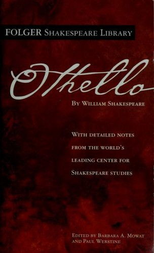
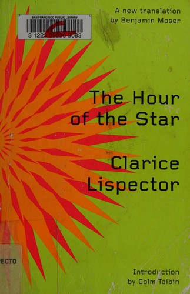

Year 2 — Senior Year (2027–2028)
Tentative and subject to change. Year 2 culminates in the external IB exams in May 2028. The HL Essay is submitted before Winter Break.
Literary works studied this year (2 of 6)

Folger Shakespeare LibraryOthello
3 weeks

New Directions, trans. Benjamin MoserThe Hour of the Star
4 weeks
Why only two. Four of the six works are read in Year 1 so that every student has a full menu of texts to choose from for the Individual Oral in spring 2027. Year 2 adds Othello and The Hour of the Star, then spends its weight on Paper 1, Paper 2 and the HL Essay — all of which draw on all six.
Combined texts, quarter by quarter
What to watch for in each quarter — the vocabulary to master, the genre moves to name, and the questions to hold while you read. Laid out as Cornell notes so you can mirror the format in your own notebook.
First, a definition: what is a field of inquiry?
A field of inquiry is one of five broad areas the IB uses to sort the big human questions that texts raise. Think of them as the five shelves any global issue can sit on:
- Culture, identity and community who belongs, who is excluded, and what identity costs
- Beliefs, values and education what a society holds true and passes on
- Politics, power and justice who has power, and how it is used or resisted
- Art, creativity and the imagination what art is for, and who decides
- Science, technology and the environment people, technology, and the natural world
A field is not your global issue — it is far too big for that. Your global issue is a narrow, arguable claim you carve out of a field: it must matter beyond one text, be visible in the text itself, and be provable in ten minutes.
Field: Politics, power and justice. Too broad: “racism in Othello.” A global issue: “how a society lets an outsider succeed while never letting him belong, so that his identity stays something others assign him.”
The Individual Oral opens by naming your field, then narrowing to your issue. Practise that move all year — see the ladder in the question banks.
Year 2 — Course Sequence
Senior Year · 2027–2028Time & Space
Genre characteristics
- Tragedy — a persuasive villain and a protagonist talked into ruin
- Oratory — argument built to be heard once, in a room, and remembered
- Graphic satire — caricature making an argument no caption would admit to
Hold these questions while you read
- Track Iago’s method across three scenes: what does he state outright, what does he imply, and what does he leave Othello to supply himself?
- Count Othello’s lines before and after Act 3. What happens to his language as he loses control of the story?
- In each speech, where does the speaker claim authority — from position, from suffering, or from evidence?
- Find the sentence in each speech that was built to be quoted. What makes it portable?
- In the Bellew cartoon: who appears to be speaking, who actually drew the speech, and for whom?
- What must a viewer already believe for that cartoon to work? What does that tell you about its audience?
Readers, Writers, and Texts
Genre characteristics
- Metafictional novella — a narrator who shows you the writing as he does it
- Advertisement — persuasion that must not look like persuasion
- Data visualisation — argument disguised as description
- Satirical essay / sketch — a persona whose composure is the real subject
Hold these questions while you read
- Rodrigo interrupts himself constantly. What does each interruption protect him from having to do?
- What does the narrator insist he cannot do — and does he do it anyway?
- For each advertisement: what problem is invented so that the product can solve it?
- What kind of person is each advertisement inviting you to become? Who is left out of that invitation?
- For each infographic: where does the axis start, what was counted, and what could not be counted and so was dropped?
- In “A Modest Proposal,” find the first place the mask slips. How long can you read before you are certain?
Intertextuality / Review
Genre characteristics
- Institutional website — authority built through structure, citation and restraint
- Photo-and-caption blog — a stranger’s life delivered in a paragraph
- Visual essay — data journalism descended directly from Du Bois
Hold these questions while you read
- What does each site’s navigation put first, and what does it bury three clicks down?
- How does each site build credibility — citation, visual design, tone, or sheer volume?
- In a Humans of New York post: whose words are in the caption, and who chose where to crop the photograph?
- Set a HONY post beside a Lange photograph. What has changed about consent? What has not?
- Who is the imagined visitor to each site, and what are they meant to do before they leave?
- Return to all six works. Which one has changed most for you since you first read it, and what changed it?
Exam Preparation
Genre characteristics
- Guided textual analysis — one unseen text, one guiding question, under time
- Comparative essay — two works, one question, an argument neither makes alone
Hold these questions while you read
- For any unseen text, in sixty seconds: what type, what audience, what does it want from them?
- What is the single most unusual formal choice on the page? Could you build a whole essay from it?
- What does the text do at its start and at its end — and why in that order?
- For Paper 2: what problem do your two works share? Not theme — problem.
- Where do the two works diverge in method while agreeing in conclusion, or the reverse?
- Which work resists the question you have been asked, and can you say so intelligently rather than avoiding it?
Quarter by quarter — schedule
Time & Space
Works & texts
- Othello by William Shakespeare (PRL, UK, 1622) — Folger edition with paired texts
- Speeches: Truth, Douglass, King, Yousafzai, Thunberg
- Political cartoons: Bellew, Harper’s Weekly, Whamond
- Paper 1 & Paper 2 practice
Timing & notes
- Othello: 3 weeks
- Speeches: 2 weeks
- See Folger resources
Readers, Writers, and Texts
Works & texts
- The Hour of the Star by Clarice Lispector (PRL, Brazil)
- Advertisements: Nike, Dove, Patagonia, Ben & Jerry’s, LEGO, Ad*Access
- Infographics: Du Bois, Our World in Data, Nightingale
- Satire & humour: Swift, Twain, Key & Peele
- Finalise the HL Essay
- Paper 1 & Paper 2 practice
Timing & notes
- The Hour of the Star: 4 weeks
- Advertisements: 2 weeks
- Infographics: 2 weeks
- HL Essay due before Winter Break (Dec 2027)
Intertextuality / Review
Works & texts
- Review of previous works & learner profiles
- Websites & blogs: NASA, NOAA, Humans of New York, The Pudding
- Paper 1 & Paper 2 practice
Timing & notes
- Review of all 6 works
- Targeted Paper 1/2 prep
Exam Preparation
Works & texts
- Review of previous works & learner profiles
- Paper 1 & Paper 2 practice
- Final timed assessments
Timing & notes
- Paper 1 & Paper 2: May 2028
- IB exams in school, on paper